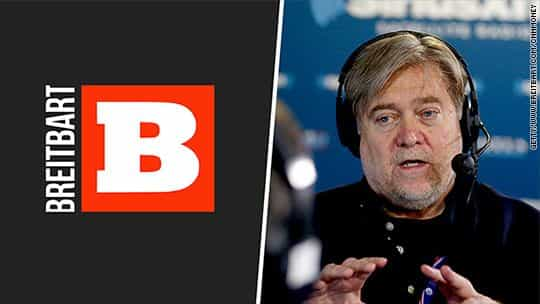

Daryush "Roosh" Valizadeh created ROK in October 2012. You can visit his blog at RooshV.com or follow him on Twitter and Facebook.


The truth cannot be concealed for long, especially in the internet age. A portion of the elite has recognized this and allowed discourse to move from political correctness version 1.0 to an upgraded 2.0 version where more real-talk is allowed. This permits them to build trust with an increasing percentage of the Western population that hates the heavy-handedness of the existing program.
Political correctness 1.0 was so strict and sniffling that it promoted a reaction which is currently threatening the entire globalist establishment. Here are tenets of the 1.0 program:
1. All races are equal
2. All sexes are equal
3. Homosexuals are just like heterosexuals
4. Islam can and should co-exist in democratic societies
5. Western civilization is the main cause of evil to minorities
6. Nation borders sacrifice human rights
7. Critique of Jews is anti-Semitic, and we must encourage Israel’s existence
When I or other commentators refer to “globalism,” we’re generally describing a system of power that has built itself atop the 1.0 program since World War 2. The reaction to this program has gotten so intense that anti-globalism is now a broad-based movement that aims to bring down both the useful idiots and the puppet masters who control it.

I’m not entirely certain if existing globalists are deciding to move to a 2.0 program to retain their control, or if entirely new billionaires, such as Peter Thiel, are attempting a power grab for their own ends. Whatever the reality, and it’s probably a combination of the two, some members of the elite are now using the upgraded political correctness program to appeal to those who reject the 1.0 version. Here is what we have in version 2.0:
1. Not all races are equal, but all races deserve equality
2. The sexes aren’t equal, but both sexes deserve equality
3. Homosexuals are just like heterosexuals
4. Islam cannot co-exist in democratic societies
5. Western civilization should be praised
6. Nation borders are essential
7. Critique of Jews is anti-Semitic, and we must encourage Israel’s existence
First let’s describe what hasn’t changed from 1.0 (points 3 and 7). Gays and Jews are still a protected class because they are the highest members orchestrating 2.0 (Peter Thiel happens to be gay). Egalitarianism in terms of sex and race (1 and 2) haven’t been completely tossed aside, since “equality” is still seen as an ideal, but purple and red pill thoughts in those areas are more accepted. It’s okay for media outlets operating on version 2.0 to state that black people are more prone to criminality followed by articles mocking feminism and other social justice insanities.
Three points have been completely reversed. First is Islam. Attacking the religion, its customs, and the terrorists it breeds is fair game, and perhaps the most consistent element of the 2.0 program that is even exhibited by liberals like Bill Maher. The second reversal is the praise of “Western civilization” with a focus on civic nationalism, which essentially means that people have to follow existing immigration laws. Lacking, however, is addressing how laws can be changed or what the specific racial demographic of a nation like the USA should be. The final reversal is the praise of national borders as a feature that can improve the safety and well-being of existing citizens.
When I refer to political correctness 2.0, I’m not referring to 4chan, the alt right, or other edgelord movements that don’t place limits on their speech, but the rising power structures that include new media, pundit thots like Tomi Lahren, Twitter e-celebrities, and government politicians, especially the ones that exist in Trump’s shadow.

The best examples of political correctness 2.0 right now are represented by Breitbart, Rebel Media, and the alt lite, who produce ideas and content that have wide reach because of the large number of people who reject the 1.0 program but who are not ready to completely throw away egalitarianism, discuss the Jewish Question, or embrace tradition. The low-hanging fruits of the 1.0 program were the KKK, racists who use the n-word, and caveman misogynists. For the 2.0 program, the low-hanging fruits are low IQ Islamists, fat feminists with green hair, and the mainstream media.
The 2.0 version is a step in the right direction, and will make my ideas of patriarchy slightly more accepting, but ultimately will fail just like 1.0 did, because it is counting on deliberate concealment of truths that simply can not be concealed in the internet age. I therefore predict that 2.0 will have a much shorter run than 1.0, and not stop a reactionary push where no lie can be successfully hoisted upon the public, and where no secret stays secret for long.
This article was originally published on Roosh V.
Read More: Is Western Civilization Worth Saving?